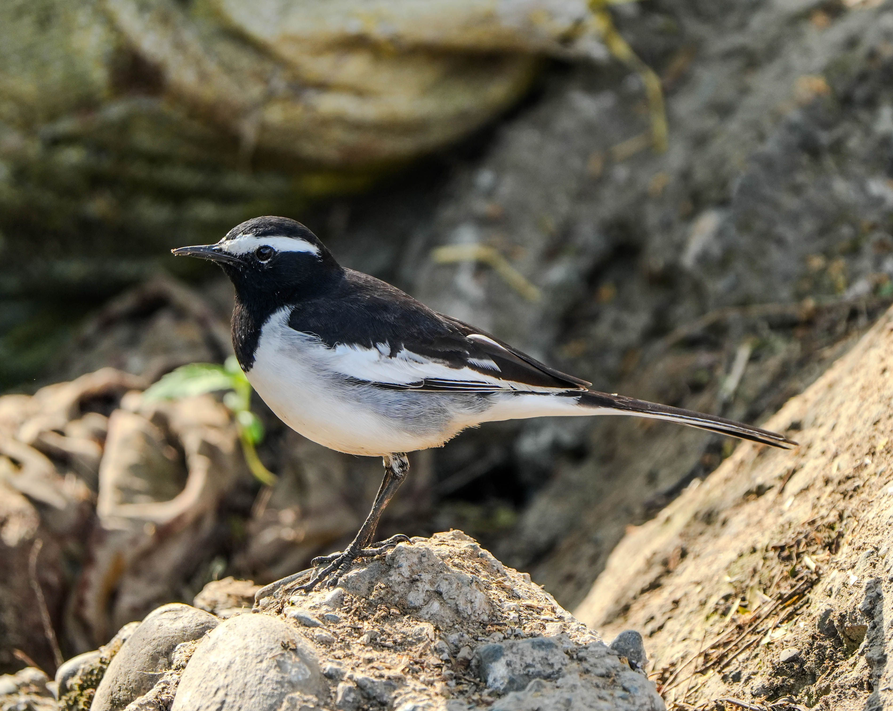

The White-Browed Wagtail is a striking black-and-white wagtail that is strongly associated with water and human settlements. It has a prominent white eyebrow, dark upperparts, white underparts, and a long wagging tail. It often walks along the edges of streams, ponds, and other wet areas while searching for insects. Its bold black-and-white pattern and conspicuous white eyebrow distinguish it from the Pied Bushchat and other black-and-white birds that may occur around similar habitats.